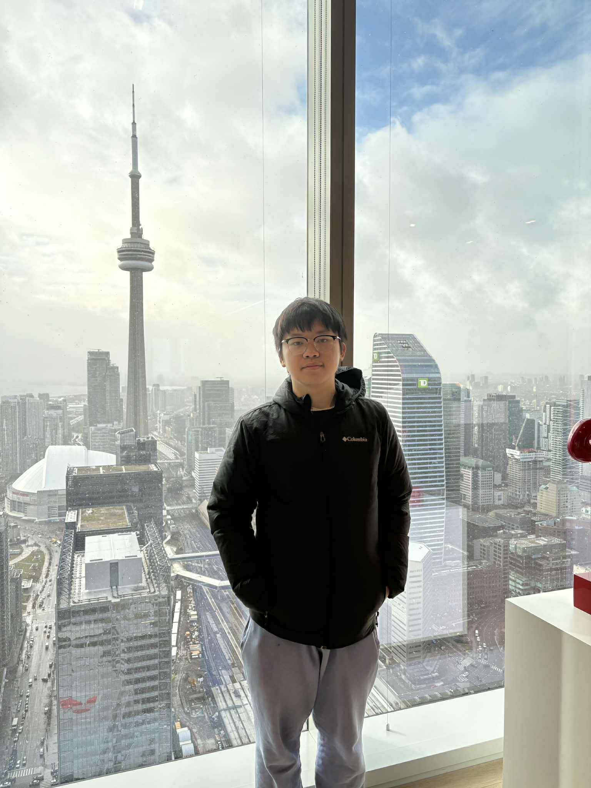
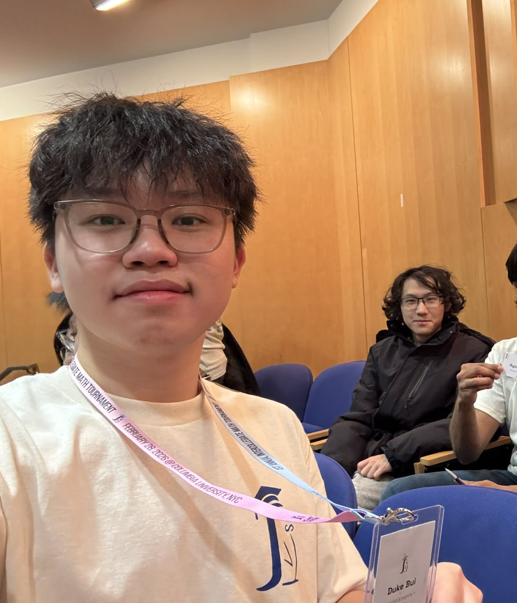
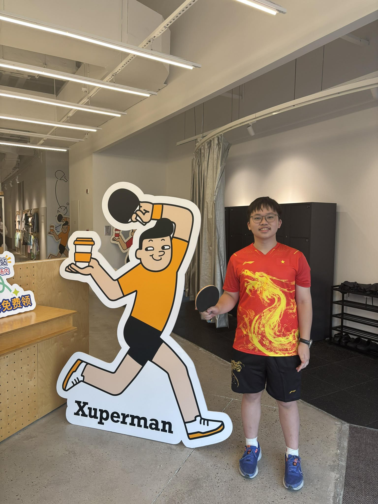

Without day one...
there will be no one day.

Hello guys, I'm Duke Bui/Bùi Minh Đức/裴明德, a Vietnamese international student in the US. I'm currently a sophomore at Honors College, Rutger University - New Brunswick. I'm majoring in Math and Computer Science, and planning to minor in Data Science. My goals in life is to have fun while I'm still here -- doing things I like, and caring about those I love.
With interest from math to programming and data science, I currently focus on expanding my knowledge throughout my academic career, and hope that one day I can have enough experience to create something big on my own.

From high school, I have participated in several math competitions, as well as got exposed to competitive programming. Recently, I have had experience with backend developing and independent research.
As of right now, I usually say to my peers that I'm in a "non-CS" point of my life. That is, I have not been active in developing my CS technical skills, but rather doing math researchs. Nevertheless, I am trying to get back on track by grinding Codeforces/LeetCode, and building some projects (like this ://) Maybe we will see road to Yellow soon (?)

Beside working and studying, my current hobbies are table tennis and running, but mainly table tennis. I continued table tennis -- my long lost sport from middle school when I come here, where I found such a great club and community. I am planning to build a project on finding equipment and suggestion for beginner to get used to the sport, let's see how it go!
Running is slowly becoming my second favourite. At first, I think about this as a supplement to get myself more mobile and my legs stronger, solely for table tennis. But as long as I run, I realize this is really enjoyable, and make my day so much more productive. I just completed my first 5K in March!
For next year, I am expecting to have an E-board position in the Rutgers University Math Association. But there is one thing I am sure of, is that I will hold secretary position, in Rutgers Table Tennis Club, 加油！
I also love solo travelling, and learning new languages/cultures. When I get to the US, I have been exposed to many different backgrounds and ethnicities, and widen my perspective about the world.
I'm currently looking for REU, quant finance, AI, SWE and data science positions. If you are interested, please contact me -- I will reach back to you ASAP !!!
bmd.icarus@rutgers.edu →Based in New Brunswick, NJ